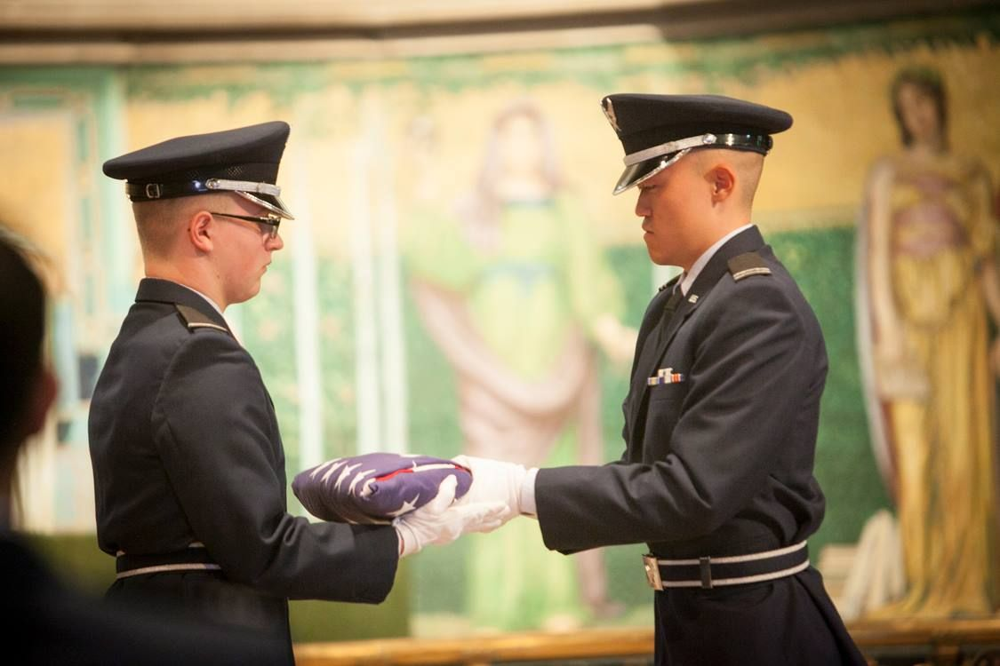

Tuition, covered
Full-tuition high school scholarships, in-college awards up to full tuition for technical majors, and the Charles McGee Leadership Award of $18,000 per year after Field Training.
Detachment 520 develops leaders of character for the United States Air Force and Space Force — at Cornell University and four partner campuses across the Finger Lakes. Four years here ends with a commission.
OUR CHARGE // THE MISSION OF AIR FORCE ROTC
To develop leaders of character for tomorrow's Air Force and Space Force.
The Air Force Core Values
The Air Force MissionTo fly, fight, and win — airpower anytime, anywhere.
01 // THE DETACHMENT
Air Force ROTC is a four-year path to a commission that runs alongside a full college education. Cadets earn their degree on their own campus while training in military studies, leadership, and physical fitness at Barton Hall — the same building where Cornellians have trained for service since the First World War.
Both worlds, no compromise. Cadets keep the life of a normal college student — clubs, majors, teams — and graduate with something few classmates have: a commission as a second lieutenant and a job that matters from day one.

02 // THE PATH TO COMMISSIONING
Every cadet follows the same proven track from first fall semester to commissioning day. The first two years carry no service obligation for non-scholarship cadets — try the program before you commit.
Aerospace Studies 1101 and 1102, Leadership Laboratory, and unit physical training. An introduction to the Air Force and to military life.
Aerospace Studies 2201 and 2202 plus preparation and selection for Field Training, the gateway to the professional officer years.
Two weeks of evaluated leadership: physical conditioning, drill and ceremonies, group leadership projects, and expeditionary training — in garrison and in the field.
Cadets sign their service contract and step into leadership of the cadet wing. Coursework deepens to three credit hours per semester.
Senior cadets run the detachment's cadet wing, mentor the classes behind them, and complete national security studies before graduation.
Graduates take the oath of office and enter the United States Air Force or United States Space Force as commissioned officers.
03 // WHY DET 520
Full-tuition high school scholarships, in-college awards up to full tuition for technical majors, and the Charles McGee Leadership Award of $18,000 per year after Field Training.
A $300–$500 nontaxable monthly stipend during the academic year on scholarship or in the POC, plus a $900 annual book allowance. Uniforms are provided.
Commission into career fields from pilot and combat systems officer to cyber, intelligence, engineering, and space operations — with a competitive salary and full benefits.
Base visits, voluntary summer internships and training, and language immersion and travel programs across the world.
ROTC runs alongside your degree, not instead of it. Cadets join teams, clubs, and Greek life like any other student on campus.
Cadets train, study, and serve together across five campuses — a ready-made team inside the larger university.
04 // CROSSTOWN PROGRAM
Training and academics are hosted at Cornell, and students from four partner schools commission through Det 520 — most crosstown cadets commute just once a week.
| Institution | Role | Location |
|---|---|---|
| Cornell University | HOST DETACHMENT | Ithaca, NY |
| Ithaca College | CROSSTOWN | Ithaca, NY |
| Binghamton University | CROSSTOWN | Binghamton, NY |
| SUNY Cortland | CROSSTOWN | Cortland, NY |
| Elmira College | CROSSTOWN | Elmira, NY |
Talk to the cadre, visit a Leadership Laboratory, or get connected with a current cadet. There is no obligation to look.